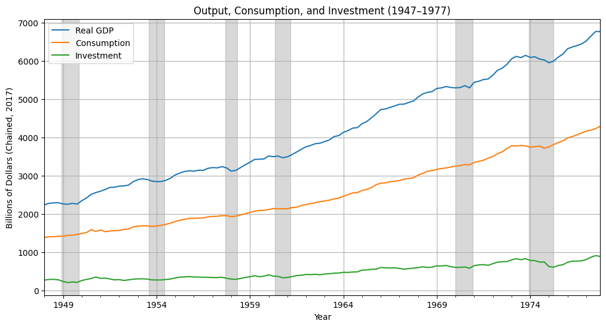
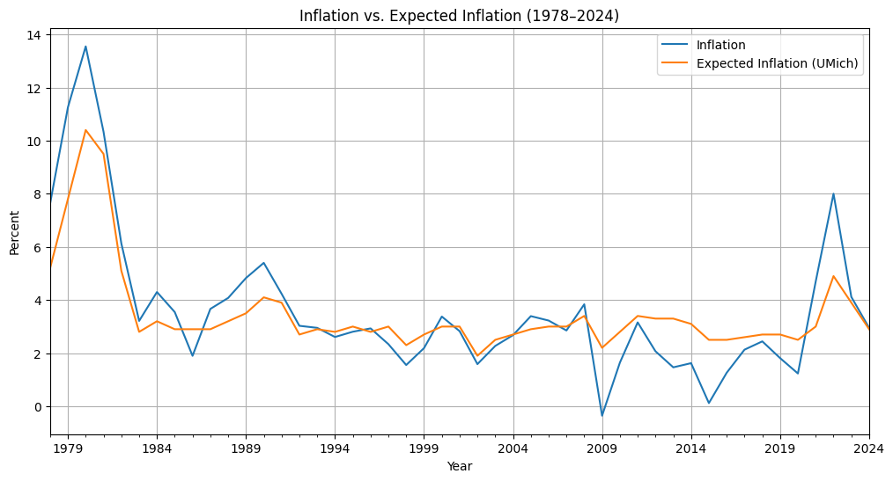
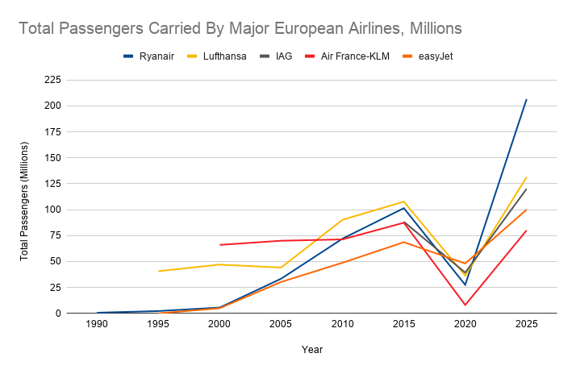

<!DOCTYPE html>
<html lang="en">
<head>
<meta charset="UTF-8">
<meta name="viewport" content="width=device-width, initial-scale=1">
<title>mia chin — essays & research</title>
<link rel="preconnect" href="https://fonts.googleapis.com">
<link rel="preconnect" href="https://fonts.gstatic.com" crossorigin>
<link href="https://fonts.googleapis.com/css2?family=Instrument+Sans:wght@400;500;600&family=Newsreader:ital,opsz,wght@0,6..72,400;0,6..72,500;1,6..72,400&display=swap" rel="stylesheet">
<style>
  :root {
    --bg: #fafbfc;
    --grid: rgba(80, 130, 200, 0.18);
    --ink: #15171a;
    --ink-muted: #6b7280;
    --rule: rgba(20, 30, 50, 0.12);
    --accent: #0a3b2e;
    --sans: 'Instrument Sans', system-ui, sans-serif;
    --serif: 'Newsreader', Georgia, serif;
  }

  * { box-sizing: border-box; margin: 0; padding: 0; }

  html, body { height: 100%; }

  body {
    font-family: var(--sans);
    color: var(--ink);
    background-color: var(--bg);
    background-image:
      linear-gradient(to right, var(--grid) 1px, transparent 1px),
      linear-gradient(to bottom, var(--grid) 1px, transparent 1px);
    background-size: 28px 28px;
    background-position: -1px -1px;
    min-height: 100vh;
    -webkit-font-smoothing: antialiased;
  }

  .layout {
    display: grid;
    grid-template-columns: 280px 1fr;
    min-height: 100vh;
  }

  /* Sidebar */
  .sidebar {
    padding: 56px 36px 56px 44px;
    border-right: 1px solid var(--rule);
    position: sticky;
    top: 0;
    height: 100vh;
    overflow-y: auto;
  }

  .name {
    font-family: var(--sans);
    font-weight: 400;
    font-size: 32px;
    letter-spacing: -0.02em;
    line-height: 1;
    margin-bottom: 12px;
    cursor: pointer;
  }

  .nav-group { margin-bottom: 12px; }

  .nav-heading {
    display: flex;
    align-items: center;
    justify-content: space-between;
    width: 100%;
    background: none;
    border: none;
    padding: 8px 0;
    font-family: var(--sans);
    font-size: 12px;
    font-weight: 500;
    letter-spacing: 0.14em;
    color: var(--ink);
    text-transform: uppercase;
    cursor: pointer;
    text-align: left;
    transition: opacity 150ms ease;
  }

  .nav-heading:hover { opacity: 0.55; }

  .nav-heading .chev {
    font-size: 12px;
    transition: transform 220ms ease;
    opacity: 0.45;
    display: inline-block;
  }

  .nav-group.open .chev { transform: rotate(90deg); }

  .nav-list {
    list-style: none;
    overflow: hidden;
    max-height: 0;
    transition: max-height 260ms ease;
  }

  .nav-group.open .nav-list { max-height: 600px; }

  .nav-list li {
    padding: 7px 0 7px 14px;
    font-family: var(--serif);
    font-size: 14px;
    font-style: italic;
    color: var(--ink-muted);
    cursor: pointer;
    line-height: 1.3;
    transition: color 150ms ease;
  }

  .nav-list li:hover,
  .nav-list li.active {
    color: var(--accent);
  }

  .nav-link {
    display: block;
    padding: 6px 0;
    font-family: var(--sans);
    font-size: 11px;
    font-weight: 500;
    letter-spacing: 0.16em;
    color: var(--ink-muted);
    text-transform: uppercase;
    text-decoration: none;
    transition: color 150ms ease;
  }

  .nav-link:hover { color: var(--ink); }

  .divider {
    height: 0px;
    background: var(--rule);
    margin: 32px 0 38px 0;
  }

  /* Main */
  .main { padding: 88px 72px; }

  .content { max-width: 768px; }

  .eyebrow {
    font-size: 11px;
    font-weight: 500;
    letter-spacing: 0.18em;
    text-transform: uppercase;
    color: var(--ink-muted);
    margin-bottom: 20px;
  }

  .content h1 {
    font-family: var(--serif);
    font-weight: 400;
    font-size: 44px;
    letter-spacing: -0.01em;
    line-height: 1.1;
    margin-bottom: 24px;
  }

  .content .meta {
    font-size: 12px;
    letter-spacing: 0.08em;
    color: var(--ink-muted);
    margin-bottom: 36px;
    text-transform: uppercase;
  }

  .content p {
    font-family: var(--serif);
    font-size: 17px;
    line-height: 1.65;
    margin-bottom: 20px;
  }

  /* Footnotes */
  .footnote-ref {
    font-size: 0.85em;
    vertical-align: super;
    line-height: 0;
    cursor: pointer;
    color: var(--accent);
    text-decoration: none;
    transition: opacity 150ms ease;
  }

  .footnote-ref:hover {
    opacity: 0.7;
    text-decoration: underline;
  }

  .footnotes {
    margin-top: 48px;
    padding-top: 24px;
    border-top: 1px solid var(--rule);
    font-size: 14px;
    line-height: 1.6;
  }

  .footnotes ol {
    list-style-position: inside;
    margin-left: 0;
    padding-left: 0;
  }

  .footnotes li {
    margin-bottom: 12px;
    color: var(--ink-muted);
  }

  .footnotes li p {
    display: inline;
    font-size: 14px;
    margin-bottom: 0;
  }

  .footnote-backref {
    margin-left: 6px;
    color: var(--accent);
    text-decoration: none;
    font-size: 0.9em;
    transition: opacity 150ms ease;
  }

  .footnote-backref:hover {
    opacity: 0.7;
    text-decoration: underline;
  }

  /* Figures / chart captions */
  .content figure {
    margin: 40px 0;
  }

  .content figure img {
    display: block;
    width: 100%;
    height: auto;
    border: 1px solid var(--rule);
    border-radius: 6px;
    background: #fff;
  }

  .content figcaption {
    font-family: var(--sans);
    font-size: 13px;
    line-height: 1.55;
    color: var(--ink-muted);
    margin-top: 12px;
    border-left: 0px solid var(--rule);
    padding-left: 12px;
  }

  .content figure.chart-small img {
    max-width: 80%;
  }

  .featured {
    margin-top: 56px;
    padding-top: 32px;
    border-top: 1px solid var(--rule);
  }

  .featured-label {
    font-size: 11px;
    font-weight: 500;
    letter-spacing: 0.18em;
    text-transform: uppercase;
    color: var(--ink-muted);
    margin-bottom: 20px;
  }

  .featured-item {
    display: block;
    text-decoration: none;
    color: inherit;
    padding: 14px 0;
    cursor: pointer;
    border-bottom: 1px solid var(--rule);
    transition: padding-left 200ms ease;
  }

  .featured-item:hover { padding-left: 10px; }

  .featured-item h3 {
    font-family: var(--serif);
    font-weight: 400;
    font-size: 19px;
    margin-bottom: 4px;
  }

  .featured-item .tag {
    font-family: var(--sans);
    font-size: 11px;
    letter-spacing: 0.14em;
    color: var(--ink-muted);
    text-transform: uppercase;
  }

  @media (max-width: 800px) {
    .layout { grid-template-columns: 1fr; }
    .sidebar {
      position: static;
      height: auto;
      border-right: none;
      border-bottom: 1px solid var(--rule);
      padding: 32px 28px;
    }
    .name { margin-bottom: 28px; font-size: 28px; }
    .main { padding: 48px 28px; }
    .content h1 { font-size: 32px; }
  }
</style>
</head>
<body>
  <div class="layout">
    <aside class="sidebar">
      <h1 class="name" onclick="loadHome()">MIA CHIN</h1>

      <div class="nav-group" id="group-essays">
        <button class="nav-heading" onclick="toggleGroup('essays')">
          <span>Essays</span>
          <span class="chev">&rsaquo;</span>
        </button>
        <ul class="nav-list">
          <li onclick="loadPiece('essay-1', this)">Business cycles and rational expectations</li>
          <li onclick="loadPiece('essay-2', this)">The financial instability hypothesis</li>
          <li onclick="loadPiece('essay-3', this)">The rise of prediction markets</li>
        </ul>
      </div>

      <div class="nav-group" id="group-research">
        <button class="nav-heading" onclick="toggleGroup('research')">
          <span>Research</span>
          <span class="chev">&rsaquo;</span>
        </button>
        <ul class="nav-list">
          <li onclick="loadPiece('research-1', this)">Ryanair</li>

        </ul>
      </div>

      <div class="divider"></div>

    <a href="cv.pdf" download="mia_chin_cv" class="nav-link">CV</a>
    <a href="mailto:mchin3@yorku.ca" class="nav-link">Email</a>
    </aside>

    <main class="main">
      <div class="content" id="content"></div>
    </main>
  </div>

  <script>
    const home = `
      <div class="eyebrow">Portfolio</div>
      <h1>Writing on markets, theory, and the economy.</h1>
      <p>I write about equities, macroeconomics, and how markets process information. Some pieces are formal valuation works; others are essays trying to think through theory and data.</p>
      <p>Pick a section from the sidebar, or start with one of the pieces below.</p>

      <div class="featured">
        <div class="featured-label">Selected works</div>
        <div class="featured-item" onclick="loadPiece('essay-1')">
          <h3>The rise of prediction markets</h3>
          <span class="tag">Essay &middot; 14 min read</span>
        </div>
        <div class="featured-item" onclick="loadPiece('research-1')">
          <h3>NVDA: an asymmetric setup</h3>
          <span class="tag">Equity research &middot; 22 min read</span>
        </div>
        <div class="featured-item" onclick="loadPiece('essay-2')">
          <h3>Labor market dislocations after the AI shock</h3>
          <span class="tag">Essay &middot; 18 min read</span>
        </div>
      </div>
    `;

    const pieces = {
      'essay-1': {
        eyebrow: 'Essay · July 2025',
        title: 'Business Cycles and Rational Expectations',
        meta: '14 min read',
        body: `
<p>Hello, it's been a while. I spent April and May reading Keynes' <i>General Theory</i> for the first time. It's definitely something I'd like to come back to, but in the meantime I figured I'd spend more time familiarizing myself with the trajectory of 20th century economic thought and how these ideas came to influence what we know as macroeconomics today. What I find striking about many of these books and papers is that they stress the need to acknowledge <i>psychological</i> factors in economic analysis, which is to say that despite it being a data-heavy discipline, there is always an underlying aspect of guesswork: trying to understand how people think, how they react to political and economic changes, and how these behaviors inform the shape of said data (as well as what ought to be done with it).</p>
<p>Robert E. Lucas Jr.'s essay, "Understanding Business Cycles", is especially salient in how it brought psychology into the late-70s macroeconomic fold. Lucas discusses 'rational expectations' as a crucial concept that economists should pay attention to, not because of a belief that current expectations rely on past experiences (as was the case at the time), but that people's expectations coincide with what is going on at any given point in a macroeconomic model; people actively adjust their behavior in the face of new economic policies, shocks, and other general 'happenings' in the market<a href="#fn1" id="ref1" class="footnote-ref">1</a>. This, and similar developments in the New Classical school of economics, had a profound effect on government policy, as it challenged the idea that aggregate demand management alone would be able to stabilize the economy in the event of a shock in the business cycle.</p>
<p>Business cycles are particularly important in Lucas' analysis because at the time, there was the widespread belief that business cycles had exogenous, institutional sources and that "once understood, these sources could be removed or their influence mitigated by appropriate institutional changes"<a href="#fn2" id="ref2" class="footnote-ref">2</a>. Lucas, however, believed that business cycles arose as economic/market phenomena, rather than political ones, and that they were a natural part of a capitalist economy. Related to this latter point, business cycle fluctuations are not stochastic, because if they were, they would not take on a cyclical pattern in the first place. In fact, they are the product of "co-movements among different aggregative time series"<a href="#fn3" id="ref3" class="footnote-ref">3</a>; the outputs across certain sectors of industry are all interconnected, which forms the business cycle. Other factors within an economy such as prices, short-term (and to a certain extent, long-term) interest rates, monetary velocity measures, and so on are also 'procyclical', moving along with the overall economic cycle.</p>
<hr>
<p></p>
<h3>Background</h3>
<p></p>
<p>In traditional Keynesian economics (particularly the kind that came after the neoclassical synthesis, that which has to do with econometrics), the types of models used in analysis are known as 'reduced-form models'. Here, endogenous variables are expressed as functions of exogenous variables. If we are to analyze a Phillips curve, for instance, the endogenous variables would be employment and inflation, which are subject to the exogenous forces of policy changes, shocks, etc. that then determine the placement of the Phillips curve.</p>
<p>There were limitations to these models, however, both in their nature and in terms of what these models meant for how policy was conducted. The cause of the significant anti-Keynesian wave of Lucas' time had to do with the 'stagflation' crisis of the 70s and the perceived ineffectiveness of Keynesian policy to address the decade of rising inflation. The weakness in the Keynesian model was its "relative neglect of the effects of demand stimulus upon the general level of prices", recall that inflation doesn't factor in to the <i>General Theory</i> much because Keynes treats both wages and prices as given (i.e. stable), rather than adjusting to clear markets<a href="#fn4" id="ref4" class="footnote-ref">4</a>. The argument from the side of the Keynesian policymakers was that "demand stimulus should not lead to inflation as long as output remained 'below potential'", supported by (in retrospect) overly optimistic models of future economic output, which led to an inflationary bent towards policy "insofar as the economy was perceived to have more slack in it than really existed, even as inflation accelerated"<a href="#fn5" id="ref5" class="footnote-ref">5</a>.</p>
<p>However, this doesn't render Keynes' framework incorrect; there was a genuine misjudgement of the labor market in the 70s, and it was much tighter and less productive than estimated at the time. The effect of all this were the conclusions that:</p>
<p></p>
<ol>
<li>Current econometric models were insufficient if one wanted to accurately grasp and manage the state of the economy.</li>
<p></p>
<li>Data had a time-lag: "the gap between actual and potential output cannot always be measured well 'in real time"<a href="#fn6" id="ref6" class="footnote-ref">6</a>.</li>
</ol>
<p></p>
<p>Tackling these premises, Lucas emphasized a need for microeconomic foundations in macroeconomics, specifically through greater analysis of business cycle theory. At the time, it was believed that business cycles had exogenous ("institutional") sources and that "once understood, these sources could be removed or their influence mitigated by appropriate institutional changes"<a href="#fn7" id="ref7" class="footnote-ref">7</a>. Crucially, this meant that the government was capable of stabilizing the economy in the short run if a slump were to occur, however Lucas argues that too much focus is given to these short-term stabilization policies, which, he adds, are not necessarily the best courses of action in every context, and that this hampers the government's ability to make structural adjustments that promote the long-term health of the economy.</p>

<p>He also criticized the Keynesian models used for policy evaluation on the grounds that they "failed to identify truly 'structural' economic relationships, i.e. relations that could be expected to remain invariant despite a change in the way that economic policy is conducted, because of the way that people's behavior depends upon their expectations" of future interest rates, income, etc.<a href="#fn8" id="ref8" class="footnote-ref">8</a> One such 'invariant' relationship is the nature of individual economic behavior, which is "forward-looking in character", policymakers ought to be thinking about how policy changes impact people's expectations in addition to how they impact the state of affairs within the economy itself<a href="#fn9" id="ref9" class="footnote-ref">9</a>.</p>
<hr>
<p></p>
<h3>Rational expectations</h3>
<p></p>
<p>In this paper, Lucas builds on the "individual decision problem" of economic theory, where one begins a period with various stocks of capital and faces "time paths of prices at which he can trade in the present and future"<a href="#fn10" id="ref10" class="footnote-ref">10</a>. Based on the time paths of labor and consumption, he forms a plan for investment. If the economic conditions at the time are in line with the plan, it is executed straightforwardly; if not, a contingency plan is drawn up. But how does our agent conceptualize the future? At the very least, we know that he has to consider market conditions and the outcome of his investments in both near and long-term time frames.</p>

<p>Perhaps it would be better to put our agent into a specific scenario so we can see how he approaches this dilemma. Let us say that he is a single "worker-producer" who makes goods to order at a fixed rate of output per hour; "he comes to his place of work, observes his current selling price, determines how many hours to work that day, sells his produce, then goes home to relax"<a href="#fn11" id="ref11" class="footnote-ref">11</a>. He earns money for his work, which he spends on a variety of goods that differ day-to-day. What happens if his selling price increases 10% one day compared to the average of his selling prices in the past? If we are to think of the psychological aspect, particularly in terms of what this price movement means to him, then we may figure out how this affects his productivity. For instance, if he believes this change was permanent, he would not be inclined to work hard, or for long. If he believes this change was transitory, he would have to think about how much labor he wanted to sacrifice today for extra labor tomorrow.</p>

<p>However, taking into account the transitory and permanent elements of a situation is not dichotomous, which is to say that when an agent thinks about price movements, they evaluate both. To use Lucas' phrasing, the very nature of "stochastic price variability" is a "mix of transitory and permanent components" that are not immediately going to be apparent to our agent, or necessarily reflected in economic data<a href="#fn12" id="ref12" class="footnote-ref">12</a>. Thus, our agent's response to price variation comes to depend on two factors: his interpretation "of the information contained in these changes" and his "preferences concerning intertemporal substitution of leisure and consumption", or how much he values his free time in comparison to work at any given moment<a href="#fn13" id="ref13" class="footnote-ref">13</a>.</p>

<p>Our agent can thus be situated within a general equilibrium "in which his price and output fluctuate, yet aggregate levels [in the rest of the economy] do not"<a href="#fn14" id="ref14" class="footnote-ref">14</a>. However, his responses to price movements will mimic the responses made in the aggregate, and as a whole this will constitute the business cycle. But what explains this symmetry?</p>

<h3>General movements</h3>
<p></p>
<p>For the sake of further illustrating our example, it is worth noting that there are two types of price increases: general and relative. General price increases are sustained and occur in the aggregate, we know this as 'inflation'. Relative price increases have to do with the increase in the price of one good relative to another. When thinking about our agent experiencing price increases for his own goods, this is a relative change in the price of his goods in comparison to others, and as mentioned, this change can be either permanent or transitory. If the agent experiences this as an increased demand for his goods, this might lead him to increase production. But when prices in general increase (and we assume no stability in average prices), the agent finds himself without a way to meaningfully respond. Since all inputs have become more expensive, the <i>real</i> price of his goods has not changed; the increase is purely nominal. Thus, he has no incentive to increase production, and his output would remain unchanged.</p>

<p>This becomes more complicated when we factor in the idea that our agent can't actually tell if something is a relative or general price increase, at least initially. During a price increase, a good proportion of firms will end up taking the optimistic route, interpreting the change as a result of an increased demand for their good(s). This puts pressure on other firms to increase their production as well because they are all receiving the same price signals. We can take these correlated responses to result in an aggregated "co-movement" in prices, output, and investment in the wider economy<a href="#fn15" id="ref15" class="footnote-ref">15</a>. This problem of interpretation ultimately explains the business cycle, and why we see synchronized highs and lows rather than uneven expansions and contractions across industries.</p>

<figure>
  
  <figcaption>Working in the period that Lucas is writing in, we can see that output, consumption, and investment trend similarly, albeit on different scales. Recessionary periods are highlighted in grey. Source: FRED.</figcaption>
</figure>

<h3>Sources of price movements</h3>
<p></p>
<p>Business cycles are defined by Lucas as "repeated fluctuations in employment, output, and the composition of output, associated with a certain typical pattern of co-movements in prices and other variables"<a href="#fn16" id="ref16" class="footnote-ref">16</a>. Lucas has established the existence of price movements and their responses, but what are their sources? Two distinctions can be made here: secular price movements, which are long-term fundamental shifts in prices driven by underlying economic factors (or in other words, average prices over a period of time); and cyclical price movements, which are short-term, often repetitive trends in prices. Secular movements, particularly in the money supply, have an indirect effect on the business cycle and can be seen as the 'force' that triggers the real business cycle with long and variable lags.</p>

<p>This has to do with the aforementioned 'signal processing problem' that our agent experienced in the section above. If it were true that inflation could be forecasted in the aggregate by using a series of short-term general price movements, one could simply rely on these forecasts to make their business decisions (e.g. if prices are only rising because of inflation, firms would not mistake this for increased demand for their products and would adjust their output, wages, etc. accordingly). The reality is, however, that the economy is judged by its past performance, and such judgements do not necessarily map on to the future (and to an extreme extent, cannot be relied upon at all to indicate its trajectory). Lucas goes on to state that if forecasts <i>were</i> always correct, "the result would be a very tight relationship between money and prices, over even very short periods, and no relationship at all between these movements and changes in real variables", which is to say that monetary changes would be able to affect prices directly without having real effects on output, investment, etc., and as a result, there wouldn't be a business cycle<a href="#fn17" id="ref17" class="footnote-ref">17</a>.</p>

<figure>
  
  <figcaption>A sample of actual vs. expected inflation using the earliest possible forecasts from the University of Michigan. The two can differ wildly, especially in the event of economic shocks (see: 2008-09), which makes it difficult to make sound assumptions about general price changes in a predictive context. Source: FRED.</figcaption>
</figure>

<p>For Lucas, what drives business cycles are underlying, fundamental changes in the economy, such as unexpected shocks or a widespread misinterpretation of price signals. Although he cannot exactly explain why these changes must work on a long time frame, he proposes that it is likely because monetary expansion occurs in different ways, and so do its effects. As a result there will inevitably be a lengthy adjustment period where co-movements occur.</p>

<hr>
<p></p>
<h3>Implications</h3>
<p></p>
<blockquote><p>"The economically literate public has had some forty years to become comfortable with two related ideas: that market economies are inherently subject to violent fluctuations which can only be eliminated by flexible and forceful governmental responses; and that economists are in possession of a body of scientifically tested knowledge enabling them to determine, at any time, what these responses should be. It is doubtful if many who are not professionally committed hold, today, to the latter of these beliefs. This in itself settles little in the dispute as to whether the role of government in stabilization policy should be to reduce its own disruptive part or actively to offset private sector instability. As long as the business cycle remains "in apparent contradiction" to economic theory, both positions appear tenable. There seems to be no way to determine how business cycles are to be dealt with short of understanding what they are and how they occur."<a href="#fn18" id="ref18" class="footnote-ref">18</a></p></blockquote>

<p>Lucas expresses his skepticism of the approach to macroeconomic policy as a series of 'levers' policymakers can control (e.g. fiscal stimulus, interest rate manipulation), in order to mitigate the effects of severe market downturns within the business cycle. More precisely, it is the belief that they are pulling the <i>right</i> levers that Lucas is in contention with. The debate around what exactly economists, politicians, etc. ought to do remains unresolved, as long as the exact nature of business cycle fluctuations remains unknown, both the interventionist and non-interventionist positions can be seen as acceptable. However, Lucas maintains that despite this, policymakers should still make an effort to understand what drives business cycles, which in turn means acknowledging the 'microfoundational' approaches that recognize the dilemmas in which agents find themselves in, along with their ability to adapt to changes in the economy.</p>

<h4>Policy implications</h4>
<p></p>
<p>Because of rational expectations, it is reasonable to assume that changes in one area of expectations impacts others. In the context of policymaking, this is an essential consideration. For instance, exploiting the tradeoff in the Phillips curve could mean changing people's expectations about future inflation, thus rendering any gains ineffective<a href="#fn19" id="ref19" class="footnote-ref">19</a>.</p>

<p>In addition to the psychology of individuals and firms, we must also consider how policymakers and central bankers approach their decision-making process. It is important for economic authorities to not seem <i>willing</i> to stimulate the economy to "exploit" the private sector's expectation of low inflation (and subsequent increased hiring rates) in order to achieve high employment without raising prices generally<a href="#fn20" id="ref20" class="footnote-ref">20</a>. If the private sector did get the sense that the central bank was trying to provoke them in any way, they would see any stimulus as too transitory to justify increased investment. Thus, expectations need to be managed. Perhaps it would be better off if the public and private sectors didn't have to play coy with each other, but the combination of signal processing and economic self-interest make it difficult to avoid such behaviors.</p>

<p>Something identified by the New Classical school more broadly is that even when the central bank engages in "discretionary optimization", correctly understanding private sector expectations and acting accordingly, in order to achieve their desired goals, the end result tends to be suboptimal (i.e. inflation, or at least more inflation than expected). What this means in practice is that monetary authorities have forgone making tradeoffs between inflation and economic activity altogether, instead making the "control of inflation the primary goal of monetary policy"<a href="#fn21" id="ref21" class="footnote-ref">21</a>. Crucially, they have also incorporated rational expectations and forward-looking behavior into their models, and as such these ideas are now seen as rather orthodox<a href="#fn22" id="ref22" class="footnote-ref">22</a>.</p>

<div class="footnotes">
  <ol>
    <li id="fn1">Woodford, Michael. "Revolution and Evolution in Twentieth-Century Macroeconomics." In Frontiers of the Mind in the Twenty-First Century, 19. Washington, 1999. <a href="#ref1" class="footnote-backref">↩</a></li>
    <li id="fn2">Lucas, Robert E. "Understanding Business Cycles." In Carnegie-Rochester Conference Series on Public Policy, 5:8, 1977. <a href="#ref2" class="footnote-backref">↩</a></li>
    <li id="fn3">Lucas, "Understanding Business Cycles," 9. <a href="#ref3" class="footnote-backref">↩</a></li>
    <li id="fn4">Woodford, "Revolution and Evolution in Twentieth-Century Macroeconomics," 12. <a href="#ref4" class="footnote-backref">↩</a></li>
    <li id="fn5">Ibid. <a href="#ref5" class="footnote-backref">↩</a></li>
    <li id="fn6">Ibid., 14. <a href="#ref6" class="footnote-backref">↩</a></li>
    <li id="fn7">Lucas, "Understanding Business Cycles," 8. <a href="#ref7" class="footnote-backref">↩</a></li>
    <li id="fn8">Woodford, "Revolution and Evolution in Twentieth-Century Macroeconomics," 21. <a href="#ref8" class="footnote-backref">↩</a></li>
    <li id="fn9">Ibid., 22. <a href="#ref9" class="footnote-backref">↩</a></li>
    <li id="fn10">Lucas, "Understanding Business Cycles," 14. <a href="#ref10" class="footnote-backref">↩</a></li>
    <li id="fn11">Ibid., 16. <a href="#ref11" class="footnote-backref">↩</a></li>
    <li id="fn12">Ibid., 19. <a href="#ref12" class="footnote-backref">↩</a></li>
    <li id="fn13">Ibid., 19. <a href="#ref13" class="footnote-backref">↩</a></li>
    <li id="fn14">Ibid., 20. <a href="#ref14" class="footnote-backref">↩</a></li>
    <li id="fn15">Ibid., 21. <a href="#ref15" class="footnote-backref">↩</a></li>
    <li id="fn16">Ibid., 23. <a href="#ref16" class="footnote-backref">↩</a></li>
    <li id="fn17">Ibid., 24. <a href="#ref17" class="footnote-backref">↩</a></li>
    <li id="fn18">Ibid., 26. <a href="#ref18" class="footnote-backref">↩</a></li>
    <li id="fn19">Explanation: If economic stimulus occurs in order to reduce unemployment, we may see higher inflation as a result. <a href="#ref19" class="footnote-backref">↩</a></li>
    <li id="fn20">Woodford, "Revolution and Evolution in Twentieth-Century Macroeconomics," 23. <a href="#ref20" class="footnote-backref">↩</a></li>
    <li id="fn21">Ibid. <a href="#ref21" class="footnote-backref">↩</a></li>
    <li id="fn22">E.g. inflation targeting is not just about controlling prices, but shaping expectations about future inflation. Monetary policy 'works' because the central bank is capable of sending authoritative signals: if firms believe that the central bank is committed to low inflation, they will set wages and prices accordingly, helping to stabilize the economy without heavy intervention. <a href="#ref22" class="footnote-backref">↩</a></li>
  </ol>
</div>
        `
      },
      'essay-2': {
        eyebrow: 'Essay · March 2025',
        title: 'The financial instability hypothesis',
        meta: '19 min read',
        body: `
<p>What is 'the economy' made up of? I begin with this kind of rhetorical question because there are many ways to answer this, with various configurations of words like 'production', 'consumption', and 'exchange' that can get more or less specific depending on who is asking. But moreover, would one consider the stock market a sector of the economy? The impulse of neoclassical economics is to say that the stock market (and the financial sphere in general) is not, at least, a primary part of the economy because it is not productive in nature; it does not produce goods or services and is merely an exchange of already-existing values. To determine whether or not an economy is 'doing well', measures like GDP are taken into account. We don't look towards the S&P or NASDAQ as they are more so gauges of speculation. At most, we may all agree that equities form a secondary market, but to relegate it to such a position may seem to undermine what finance capital is capable of. If the financial sphere isn't doing too well, industries and other 'real' productive spheres of the economy do fail. I do not need to tell you that financial crises occur and have real effects on employment, prices, and so on.</p>
<p>Hyman P. Minsky gets at this impulse quite presciently through his work, over two decades before the 2008 financial crisis. Why was it that financial instability occurred, and how was it generated within the financial sphere? He largely saw such instability as endogenous, i.e. as emerging from within the financial system, rather than exogenously pushed onto it through monetary policy or the actions of the Central Bank (although policy decisions can shape what goes on within these systems). There is a large irony, or contradiction, or whatever you'd like to call it, where finance capital operates through the borrowing and lending of money under the assumption that debts will be paid off, but speculative liability structures can allow for the due date to be pushed back indefinitely, so firms don't really <i>have</i> to pay them off. Since firms are incentivized to speculate (especially during times of prosperity), short-term debts spiral into perpetual long-term debts. So what happens when one day, the bill finally comes due? A crisis emerges.</p>
<p>Minsky's seminal work is his 407-page book, <i>Stabilizing an Unstable Economy</i>, originally published in 1986. For the purposes of not wishing to simply regurgitate this book, and also because I'm having a lot of fun in the Levy School of Economics' Minsky Archive, I will be drawing from a number of his essays and lectures, namely the essay "The Financial-Instability Hypothesis: Capitalist Processes and the Behavior of the Economy" (1982), to explain some of his core ideas.</p>
<p>Minsky famously studied under Joseph Schumpeter and Wassily Leontief as he completed his economics PhD at Harvard. However, much of what developed his theory of financial instability was a re-evaluation<a href="#fn1" id="ref1" class="footnote-ref">1</a> of the work of John Maynard Keynes in the 1980s. Building on the standard theory, he saw a reluctance among the standard economists of his time to acknowledge the interplay between the financial system and what was referred to as the 'real' economy. As he states in his Financial Instability Hypothesis essay, "Whereas standard theory views an economy as producing and consuming outputs, a Wall Street perspective views an economy as producing and allocating profits"<a href="#fn2" id="ref2" class="footnote-ref">2</a>. We can interpret the Wall Street standpoint as perceiving a managerial layer over the 'real' economy where profit flows dictate what exactly can be produced and what people are able to consume. To be clear, this layer is permeable, but nonetheless, as finance capital began to exert a greater influence on the behavior of the economy at the time, Minsky saw a necessity in moving away from the standard perspective and into one that acknowledged the role of finance capital in the modern economy.</p>
<hr>
<p></p>
<h3>Theoretical background: Keynes and Kalecki</h3>
<p></p>
<p>Note that during Keynes' time, the type of capitalism that existed was composed of a "small government economy with a sophisticated and evolving financial structure" that had central banks that were reluctant to intervene, whereas the type of capitalism that exists today is much larger in scope with even more 'sophisticated and evolving' financial structures with a central bank that <i>is</i> willing to intervene<a href="#fn3" id="ref3" class="footnote-ref">3</a>. Considering the role that the central bank plays in the economy, this view recognizes that policy decisions have consequences, but also that the financial system may be lulled into a false sense of security by the presence of the central bank's lender of last resort (colloquially, 'bailout') capabilities. While the bank does have a responsibility to use this power to mitigate a widespread collapse, it must also be said that it shoulders the burden of financial strain as a result. But more on central banking later. Let's turn to the first part of the statement about the financial structure of modern capitalism.</p>
<p>When it comes to the standard Keynesian theory, there exists a study of business cycles and speculation, but insofar as economic activity is largely determined by the government and central bank. What Minsky aims to do here is to add onto the standard theory, emphasizing that economic behavior is tied to financial structures, specifically that the robustness or fragility of such structures affect the financial sphere in general. For instance, if we have a fragile financial structure, instability is more likely to be generated. In the event of a collapse, we will see a ripple effect by way of decreased household spending, corporations cutting back on investment and production, and so on. Unfortunately, there is a tendency in capitalism towards creating fragile structures due to the monetary incentives towards innovating in the realm of financial instruments, often without regard to how tenable they are in the long-run. Analyzing financial structures in tandem with the cyclical nature of modern capitalism leads to the conclusion that "the internal workings of a capitalist economy generate financial relations that are conducive to instability"<a href="#fn4" id="ref4" class="footnote-ref">4</a>.</p>
<p>Tying finance to the rest of the economy, Michal Kalecki was one to point out that firm's profits help finance their commitments, and that there is a link between their commitments on financial instruments (debt repayment) and financing. According to Kalecki's profit equation, <i>profits = investment + dividends - household saving - government saving - foreign saving</i>.<a href="#fn5" id="ref5" class="footnote-ref">5</a> This sort of insight can help with understanding the complex nature of the financial system and the variables that firms need to keep in mind, however Minsky does see a need to zero in on the 'investment' portion of this equation, tying investment profit to demand conditions:</p>
<ol>
<li>Profits from producing goods depend on net profit (the profit after production and labor costs). This is understood.</li>
<p></p>
<li>Profits from purchasing investment instruments depend on what kind of investments are available to you. The types of instruments available to you in the first place are dependent on your profits, both prospective and realized, because lenders need to be able to see that you can give them their money back.</li>
</ol>
<p></p>
<p>This is all to say that investment and profits are a two-way street. It is not just that investment helps determine profit, but that profit determines the type of investment available to the firm. Furthermore, the interconnected nature of modern finance creates the corollary that the financial climate also informs the type of liability structure a firm chooses, i.e. whether they decide to take on more or less risk.</p>

<h3>The financial instability hypothesis</h3>
<p></p>
<p>Minsky presents a model of the economy that can be seen as a set of balance sheets with three components: cash-payment commitments, anticipated cash flows, and realized cash flows<a href="#fn6" id="ref6" class="footnote-ref">6</a>. These three are linked together in examining the terms of borrowing and lending between firms and other such entities. Firms can acquire money through producing and selling goods; borrowing, either <i>de nova</i> or by rolling over debt; selling assets; or drawing from their cash reserves<a href="#fn7" id="ref7" class="footnote-ref">7</a>. Typically, the income earned from production is used to fulfill payment commitments. When negotiating payment terms with lenders, projected cash flows (gross profits after taxes) are examined by the lender(s) along with the realized cash flows.</p>
<p>The finished agreement goes on to form a part of a firm's liability structure. This can broadly be defined as a firm's configuration of positions in capital assets, their (re)financing positions, and their payment commitments (interest, dividends, etc.). In short they form the structure of "money now for money later exchanges"<a href="#fn8" id="ref8" class="footnote-ref">8</a>.</p>
<p>The crux of the hypothesis, as mentioned before, has to do with the tension between the lender-borrower agreement and the incentives towards investment. But how does this play out? Minsky highlights three financing methods (ways of 'making position') that correspond to increasing degrees of indebtedness:</p>

<h3>Hedge financing</h3>
<p></p>
<p>In this structure, the firm "expects the cash flow from operations to cover cash commitments"<a href="#fn9" id="ref9" class="footnote-ref">9</a>. That is, their profits are such that they can fully repay their loans, and it's worth mentioning that they ensure this can be done by taking on long term debts that do not require any repayment of principle in the short term. The firm also has cash or cash-equivalent assets that they hold as a 'hedge' against anything that could affect their income. This is the most stable type of financing, as financial difficulties can only occur if there is a fall in the firm's income. Insofar as a widespread financial crisis is concerned, a failure in a hedge financing unit will not cause any "downward financial instability", which is to say that it will largely be contained within the firm itself<a href="#fn10" id="ref10" class="footnote-ref">10</a>.</p>

<h3>Speculative financing</h3>
<p></p>
<p>In this structure, the firm does not have enough cash coming in to pay the debt completely, nor do they have reserves to fall back on. The firm pays the interest only and rolls over (reinvests) the principle. Put most simply, this type of financing is characterized by "any financing of long-term assets with short-term debt"<a href="#fn11" id="ref11" class="footnote-ref">11</a>. This structure is characteristic of entities like banks and treasuries with floating (short-term) debts.</p>

<h3>Ponzi financing</h3>
<p></p>
<p>In this structure, firms cannot make payment commitments at all through current or prospective earnings and must therefore increase their indebtedness in order to make repayments. Ponzi finance characterizes firms that make long-term investments in assets that are only viable if they appreciate. "Whereas a unit engaged in rollover or speculative finance can carry on forever, provided interest due is earned, Ponzi financing has a natural terminal point as equity falls to zero"<a href="#fn12" id="ref12" class="footnote-ref">12</a>.</p>

<p>These financing methods are not set in stone. Indeed, Minsky sees these methods as tied to the stages of the business cycle. When the majority of firms have a hedge financing structure, short-term financing is readily available on favorable terms in order to incentivize the use of these instruments over long-term financing. As more firms become attracted to short-term financing, the short-term financing of long-term positions is increasingly taken up. An increase in profits in the aggregate will also 'validate' the decisions of the borrowers and lenders to engage in a speculative financial model<a href="#fn13" id="ref13" class="footnote-ref">13</a>. A firm with a speculative structure may turn to a Ponzi financing structure when:</p>

<ol>
<li>Realized cash flows are lower than expected. If net profits are not enough to sustain even repayments on the principle, firms will increase their indebtedness to make payment commitments.</li>
<p></p>
<li>Interest rates rise beyond expectations.<a href="#fn14" id="ref14" class="footnote-ref">14</a> Speculative financing depends on being able to refinance at a stable, low interest rate. As the refinancing amount increases, "the short rates move up relative to long rates, and the cost of carrying that short debt increases"<a href="#fn15" id="ref15" class="footnote-ref">15</a>. If there is a rise in interest rates, payment commitments will rise beyond what is expected, so the firm has no choice but to move to a Ponzi structure.</li>
<p></p>
<li>A firm pursues a very aggressive investment strategy. This is sort of idiosyncratic and can be tied to the explanations above, but this encompasses instances where firms intentionally increase their indebtedness without regard to cash flows. Minsky notes that during the leveraged buyout episodes of the 1980s, some deals included payment-in-kind bonds where debtors agreed to pay interest with additional debt<a href="#fn16" id="ref16" class="footnote-ref">16</a>.</li>
</ol>

<p></p>
<p>The main characteristic of Ponzi finance is that the prospect of making position is pushed further and further into the future until "the capitalization of interest may lead to debts that are far beyond what expected cash flows can support"<a href="#fn17" id="ref17" class="footnote-ref">17</a>. When the economy is heavily weighted towards Ponzi and speculative finance structures, it is only a matter of when, not if, financial crisis will occur. Post-crisis, firms will return to a hedge financing structure until confidence in investment grows again<a href="#fn18" id="ref18" class="footnote-ref">18</a>.</p>

<h3>Example: Junk bonds and leveraged buyouts</h3>
<p></p>
<p>It may be helpful here to illustrate how Ponzi financing leads to instability. In a 1992 lecture titled "Financial Crises: Systemic or Idiosyncratic", Minsky references the 'junk bonds' present in corporations' portfolios during the highly leveraged buyout epidemic of the 1980s. Firms turned to high-yield bonds with very low margins of safety in order to acquire the funds to purchase another company, hoping that its asset sales, cash flows, or even the sale of the company altogether, would be able to pay off the firm's debt. Some key points are highlighted here:</p>
<blockquote><p>"If you have a highly leveraged organization, one of the things that cash flow wizards usually do is allocate a portion of what would otherwise be repaid earnings, to debt redemption; to pay off the debt. After all, the game in the highly leveraged buyout is always to buy the company, and within three or four years or less, be able to sell it off at a premium to what the equity was before via rapid reduction of debt. But if you're using cash flows to clean up balance sheets, you're not using cash flows to finance investment expenditures. What you have immediately as a consequence in the junk bond phenomenon is a downward shift in the demand curve. Now all of these had presumably, small margins of safety. But if investment goes down as a result, aggregate profit goes down, aggregate capital income goes down, and the demand curve goes down; so instead of having independent demand curves, the demand curves are linked. And therefore instead of having bonds or mortgages that perform independently of each other, they [can] all be affected by the same virus... There are no independent managers out there in the world. And if all of your financing clans are based upon the demand curves out there, they're going to move in the same way."</p></blockquote>
<p>With this example, there is a link between the untenability of highly indebted firms and endogenous financial instability. If firms are preoccupied with debt repayments, nothing is being invested in the firm itself. As firms spend less on producing goods and as they lose whatever competitive advantage they may have had, profits fall, their cash flow decreases, and aggregate demand decreases as well. This forces the firm into a state of collapse along with those it has any connections to. If the weight of speculative and Ponzi finance is great enough in the financial system, nobody will be able to make position; a crisis will occur. In this sense, inner turmoil in the financial industry has effects on the rest of the economy.</p>

<h3>From a lender's perspective</h3>
<p></p>
<p>Much has been said about the borrower's behavior: how the financial climate influences their liability structure, how they may move from one structure to another, how a widespread failure to make repayments results in financial collapse. But it may be worth discussing the lender's situation and how they may react to firms reaching the terminal stage of Ponzi financing. In short, a default on payments will place the lender in debt (perhaps they may also turn to Ponzi financing structures if they still have commitments to make) but also makes it so that funds are no longer being provided for investment.</p>
<p>Lending is quite precarious. When a borrower aims to purchase a position-making instrument, there are a few criteria that must be fulfilled. One, the instrument must have high liquidity (i.e. large transactions can be executed without resulting in large changes in price). Two, there must be a broad market for that instrument. And in many cases, there must also be a residual market maker who can create the former two conditions if needed (usually the central bank). These instruments must also be able to generate cash at the "initiative" of the money manager, if they fall short of anticipated levels or if there is a forced attempt to make position using assets that are not usually used for that purpose (e.g. municipal bonds) and prices fall, sufficient cash will not be raised<a href="#fn19" id="ref19" class="footnote-ref">19</a>.</p>
<p>When debts cannot be fulfilled because profit flows are lower than anticipated, future profit flows lower as a result. This is according to the observation that "the market reaction to a disequilibrium tends to make things worse, not better"<a href="#fn20" id="ref20" class="footnote-ref">20</a>. However, profit flows can be sustained (and even induced) through intervention, as has been the case in the US post-WWII.</p>

<h3>Central banking</h3>
<p></p>
<p>The central bank is seen to have a responsibility to mitigate financial crises<a href="#fn21" id="ref21" class="footnote-ref">21</a>, having certain regulatory functions and capabilities to ensure that firms are still able to make position even if they do not have the funds to do so. When central banks exercise this power, it is as the 'lender of last resort'. For Minsky, there are three distinct aspects of this function:</p>
<p></p>
<ol>
<li>When the price of the asset that a firm usually uses to make position starts to fall, they look to sell their other assets. As this spreads, the prices of a large number of financial instruments start to fall and firms' ability to borrow (or even remain solvent) decreases. Thus the central bank has a responsibility to step in and prevent a mass fall in asset values either by providing the funds for position-making or extending some kind of credit to the firms. This responsibility is especially large when the proportion of speculative or Ponzi finance in the financial system is also large<a href="#fn22" id="ref22" class="footnote-ref">22</a>.</li>
<p></p>
<li>In the aftermath of a crisis brought on by highly speculative finance, the central bank ought to also restructure debts so that firms can shift towards a hedge finance model to make the financial structure more robust.</li>
<p></p>
<li>And: "to guide the evolution of the financial system so that the central bank remains in touch with the position-making markets and so that the weight of speculative and Ponzi finance is constrained"<a href="#fn23" id="ref23" class="footnote-ref">23</a>. That is, they must ensure the robustness of the economy in the long-run.</li>
</ol>
<p></p>
<p>It is this third function that has become tenuous. Remaining 'in touch' with position-making markets has proven to be difficult for the Federal Reserve, as firms' position-making strategies have shifted from the primary usage of Treasury bills (e.g. in the decade after WWII) to a much more varied portfolio of investment instruments. This variation has largely gone unchecked and uncontrolled. Furthermore, the weight of the first two responsibilities has preoccupied the Fed to the extent that they are no longer able to play a guiding role in structuring the economy.</p>
<p>Nonetheless, there is a difficult bind that the central bank, namely the Federal Reserve, has found themselves in as a result of the lender function. The conclusion that must be drawn here is that the financial sector ought to be aware that lender of last resort functions are not to be taken lightly or exercised frivolously. Just as the central bank has a responsibility to mitigate financial collapse, the financial sphere ought to ensure that it does not generate the conditions for such a collapse in the first place. The issue is that firms are not concerned with doing this; there is just too much money to be made.</p>

<hr>
<h3>Conclusion</h3>
<p></p>
<p>In Keynes' <i>General Theory</i>, there exists "an underlying view that the financial system is given to bursts of euphoria, in which asset values and liability structures become uncoupled from the underlying cash flows that productivity generates. This means that the depressions of history are normal functioning events in an economic order where profits are available from speculating on asset appreciation"<a href="#fn24" id="ref24" class="footnote-ref">24</a>. Four points here, with applications from Minsky's hypothesis:</p>
<p></p>
<ol>
<li>The financial system operates according to business cycles, the peaks of which are referenced as these moments of 'euphoria'.</li>
<p></p>
<li>Increased optimism during periods of prosperity means that firms' liability structures become increasingly fragile, as the pressure to make position lessens and cash flows are steady. When this period is over, firms end up in a scenario where their existing cash flows do not cover interest payments, much less the debt itself, and they are forced to finance their (re)payments through increasing their indebtedness.</li>
<p></p>
<li>This becomes true for more firms as more money goes into paying off interest, maintaining dividend output, etc. than it does financing goods-production (i.e. what would actually increase cash flows). As investment goes down, so does aggregate demand, and this happens across the board.</li>
<p></p>
<li>Because of the cyclical nature of capitalism, even when there is some sort of shock to the financial system, firms will gradually warm up to speculative finance pos episode of instability.</li>
</ol>
<p></p>
<p>Minsky's thesis is that a modern capitalist economy is "inherently unstable" and these episodes of collapse are the product of an "endogenous incoherence plus policy interventions and institutional constraints"<a href="#fn25" id="ref25" class="footnote-ref">25</a>. We have seen the endogenous incoherence created by the business cycle, the role of the central bank in containing crises, and the constraints in which both finance and government must act within. I am not sure how relevant Minsky's hypothesis is to the looming threat of recession today. For a long time people believed that increased inflation, the large amount of public and private debt in the economy, and other such concerns were destabilizing the economy, and that a second Great Depression was imminent. Indeed, even Minsky acknowledged these fears in the 90s.</p>
<p>It is quite clear that the US government aims to create some sort of economic reform through brute-force policy decisions. To what extent, with what policies, and to what end, nobody is really sure about. What <i>has</i> been undertaken, at least, is a paring down of federal funding and staffing, courtesy of the newly-implemented Department of Government Efficiency. The department is operating under the assumption that the federal government has become a bloated, wasteful entity, and that it is time to begin reorganizing the government from first principles. A little more niche among Trump's base is the belief that the Federal Reserve ought to be abolished as well, it is only quasi-governmental, after all. But the idea that large swathes of government can go without consequence (and that somehow, it will actually improve the lives of the average American) requires a cautious approach, especially considering the lack of alternative plans set forth by the administration.</p>
<p>There is a very difficult tension between the financial system and 'governance', specifically the central bank. The former aims to fuel economic activity, while the latter aims to provide structure to it. If firms are not willing to limit their activities in a way that ensures the health of the economy in the long term, the government and central bank ought to step in and make the necessary policy decisions to do so, yet they have largely been playing reactively. Despite this, a second depression has not occurred, and we are currently 17 years removed from the last purely financial recession. Unfortunately, much of the animosity towards these institutions does not recognize this at all. As was the case in 1982, it remains the case today: "It is ironic that it is currently fashionable to hold big government and the big bank in contempt for their success in preventing a catastrophic depression has created the complacency that fathered this contempt"<a href="#fn26" id="ref26" class="footnote-ref">26</a>.</p>

<hr>
<p></p>
<h2>Appendix 1: <i>Hedge, speculative, and Ponzi financing and their relationship to interest rates</i></h2>
<p></p>
<ol>
<li>Hedge structures are unaffected by rate changes as their cash flows are more than enough to cover operations and (re)payments.</li>
<p></p>
<li>Speculative structures are sensitive to rate changes due to their reliance on financial markets functioning 'normally'. A rise in rates will raise payment commitments.<a href="#fn27" id="ref27" class="footnote-ref">27</a></li>
<p></p>
<li>Ponzi finance firms are especially sensitive to rate changes. If rates rise, not only will their payment commitments increase, but their expected payoffs will also decline, as these capital asset values are "inversely related to interest rates" (that is, a rise in borrowing costs makes investment less enticing, leading to a decline in the price of stocks, bonds, etc.).<a href="#fn28" id="ref28" class="footnote-ref">28</a></li>
</ol>

<div class="footnotes">
  <ol>
    <li id="fn1">And indeed, even a rehabilitation of Keynes' philosophy. Keynesian thought was applied multiple times in the creation of 20th century macroeconomic policy, from the neoclassical synthesis to New Keynesianism. However, Minsky saw a critical failure on the part of these movements to recognize the role of the financial system in creating a holistic understanding of how the economy behaves. <a href="#ref1" class="footnote-backref">↩</a></li>
    <li id="fn2">Hyman Minsky, "The Financial-Instability Hypothesis: Capitalist Processes and the Behavior of the Economy," in Financial Crises: Theory, History, and Policy, eds. Charles P. Kindleberger and Jean-Pierre Laffargue (Cambridge, England: Cambridge University Press, 1982), 20. <a href="#ref2" class="footnote-backref">↩</a></li>
    <li id="fn3">Hyman Minsky, "Endogeneity of Money," in Nicholas Kaldor And Mainstream Economics: Confrontation Or Convergence?, eds. Edward J. Nell and Willi Semmler (New York, NY: St. Martin's Press, 1991), 210. <a href="#ref3" class="footnote-backref">↩</a></li>
    <li id="fn4">Minsky, "The Financial-Instability Hypothesis," 36. <a href="#ref4" class="footnote-backref">↩</a></li>
    <li id="fn5">Ibid., 28. <a href="#ref5" class="footnote-backref">↩</a></li>
    <li id="fn6">Ibid., 20. <a href="#ref6" class="footnote-backref">↩</a></li>
    <li id="fn7">Hyman Minsky, "Stabilizing an Unstable Economy: The Lessons for Industry, Finance and Government," in Weltwirtschaft und unternehmerische Strategien: Wirtschaftspolitik im Spannungsfeld zum Innovationsprozess (Global Economy and Entrepreneurial Strategies: World Economy in the Economic Field to the Innovation Process), ed. Karl Aiginger (Wien, Austria: Österreichische Investitionskredit Aktiengesellschaft: Österreichisches Institut für Wirtschaftsforschung, 1986), 35. <a href="#ref7" class="footnote-backref">↩</a></li>
    <li id="fn8">Ibid. <a href="#ref8" class="footnote-backref">↩</a></li>
    <li id="fn9">Hyman Minsky and Mark Vaughan, "Debt and Business Cycles," Business Economics 25, no. 3 (1990): 26. <a href="#ref9" class="footnote-backref">↩</a></li>
    <li id="fn10">Minsky, "The Financial-Instability Hypothesis," 23. <a href="#ref10" class="footnote-backref">↩</a></li>
    <li id="fn11">Minsky and Vaughan, "Debt and Business Cycles," 26. <a href="#ref11" class="footnote-backref">↩</a></li>
    <li id="fn12">Ibid. <a href="#ref12" class="footnote-backref">↩</a></li>
    <li id="fn13">Minsky, "The Financial-Instability Hypothesis," 30. <a href="#ref13" class="footnote-backref">↩</a></li>
    <li id="fn14">See Appendix 1 for more on financing structures and their relation to interest rates. <a href="#ref14" class="footnote-backref">↩</a></li>
    <li id="fn15">Hyman Minsky, "Financial Crises: Systemic or Idiosyncratic," The Crisis in Finance (conference at the Levy Economics Institute of Bard College, Annandale-On-Hudson, NY, April 4, 1991). <a href="#ref15" class="footnote-backref">↩</a></li>
    <li id="fn16">Minsky and Vaughan, "Debt and Business Cycles," 26. <a href="#ref16" class="footnote-backref">↩</a></li>
    <li id="fn17">Minsky, "Stabilizing an Unstable Economy," 36. <a href="#ref17" class="footnote-backref">↩</a></li>
    <li id="fn18">Note that "if the recessions are mild then there will be an upward trend in the ratio of speculative and Ponzi finance as a result of the way short-run finance is linked to the financing of investment" (Ibid., 37). That is, firms will opt to engage in speculative financing in order to make up for lost ground during the recession. <a href="#ref18" class="footnote-backref">↩</a></li>
    <li id="fn19">Minsky, "The Financial-Instability Hypothesis," 31. <a href="#ref19" class="footnote-backref">↩</a></li>
    <li id="fn20">Ibid., 37. <a href="#ref20" class="footnote-backref">↩</a></li>
    <li id="fn21">Note that 'depression' and 'financial crisis' are two separate things. What the central bank does is contain crises so that they do not lead to depressions. However, every depression has been associated with a financial crisis, as Minsky states in his 1991 lecture "Financial Crises: Systemic or Idiosyncratic". <a href="#ref21" class="footnote-backref">↩</a></li>
    <li id="fn22">Ibid., 35. <a href="#ref22" class="footnote-backref">↩</a></li>
    <li id="fn23">Minsky, "The Financial-Instability Hypothesis," 35. <a href="#ref23" class="footnote-backref">↩</a></li>
    <li id="fn24">Minsky, "Stabilizing an Unstable Economy," 43. <a href="#ref24" class="footnote-backref">↩</a></li>
    <li id="fn25">Ibid., 31. <a href="#ref25" class="footnote-backref">↩</a></li>
    <li id="fn26">Minsky, "The Financial-Instability Hypothesis," 27. <a href="#ref26" class="footnote-backref">↩</a></li>
    <li id="fn27">Minsky, "The Financial-Instability Hypothesis," 23. <a href="#ref27" class="footnote-backref">↩</a></li>
    <li id="fn28">Ibid. <a href="#ref28" class="footnote-backref">↩</a></li>
  </ol>
</div>
`
        },
      'essay-3': {
        eyebrow: 'Essay · October 2024',
        title: 'The rise of prediction markets',
        meta: '12 min read',
        body: 
`<p>It is no question that the smartphone has become a ubiquitous, societally-reorienting technology. Almost two decades after the iPhone was announced, and at a time when over half the world's population owns a smartphone, we are now seeing some of the longer-term effects that this ubiquity has had in financial markets. With the rise of sites like Polymarket, PredictIt, and Kalshi, we can see a variety of phenomena that can be traced to the past 10, or even 20, years or so of financial and technological innovations, culminating in the proliferation of retail trading apps. The ability to move money, track markets, and discuss them on social media has made speculation much more accessible for the average person.</p>
<p>This explosion of retail investing can be traced in significant part to pandemic-era stimulus efforts<a href="#fn1" id="ref1" class="footnote-ref">1</a>. Those who were willing to take on more risk would find themselves in the niche but quickly growing sphere of 'decentralized finance', with 2022 being a cultural apotheosis for this industry. Decentralized finance, and by extension cryptocurrency, are not new developments by any means. Bitcoin was established in 2009 as a new type of currency that did not rely on traditional banking systems, operating instead through its own distributed ledger systems. As the cryptocurrency industry grew, the issue of government regulation began to loom. Companies devised ways of introducing stability into notoriously illiquid, volatile markets through the creation of 'stablecoins' backed by a benchmark asset (for instance, USDC, the currency used on Polymarket, is pegged to the value of a fiat U.S. dollar). These coins, however, may fail to keep adequate reserves, and companies such as Tether and Bitfinex have come under fire for underreporting their assets<a href="#fn2" id="ref2" class="footnote-ref">2</a>. Both presidential candidates are now including cryptocurrency initiatives in their campaigns, further legitimizing their presence but nonetheless marking a deviation from their original purpose as an 'autonomous' form of currency<a href="#fn3" id="ref3" class="footnote-ref">3</a><a href="#fn4" id="ref4" class="footnote-ref">4</a>.</p>
<p>It seems as though these developments are culminating in something that makes use of people's newfound participation in speculative markets, largely mediated through their phones. Prediction markets in themselves are not novel phenomena either, but the infrastructure provided by decentralized finance has allowed prediction markets to rise out of relative obscurity and gain an audience they would not have had if they had remained integrated with traditional financial institutions, private businesses, and academia. Much of this has to do with regulatory ambiguity; there are many grey areas when it comes to what the SEC is and is not enforcing as a security, and a comprehensive legal framework has yet to emerge for this asset class. So far, the operative definition of a security from the Howey Test of 1946 remains in use: "an investment of money in a common enterprise with profits to come solely from the efforts of others"<a href="#fn5" id="ref5" class="footnote-ref">5</a>. Under this standard, the SEC would make the case that all cryptocurrencies are securities. However, stablecoins seem to be exempt from this definition, given that a Binance case was dropped earlier this year on the basis that stablecoins are not profitable, making it more difficult to argue that they have any real investment upside.<a href="#fn6" id="ref6" class="footnote-ref">6</a></p>
<p>And when it comes to the use of stablecoins to participate in a speculative prediction-based market, regulation is unclear. The speed and ease with which people can adopt cryptocurrency payments and set up decentralized finance projects, without needing approval from traditional financial institutions or government, means that the state may not be able to keep up with new developments. However, it has never stood idly by in the growth and development of the market. Tracing how these platforms emerged, and why they remain so difficult to regulate, reveals the structural relationship between markets and states that political economist Karl Polanyi mapped in his 1944 book, <i>The Great Transformation</i>.</p>
<hr>
<p></p>
<p>Polanyi's concepts are perhaps most frequently placed within a broader literature devoted to studying the history of the world economy, especially as it relates to globalization and industrialization, but most central to his economic thought is his contention with the laissez-faire economic policy of 19th century Britain and the idea of a 'self-regulating' global free market. In <i>The Great Transformation</i>, he emphasizes the role of the state in creating a framework for which this market is able to operate within, giving it the <i>appearance</i> of self-regulation while the state either intervenes periodically or sets up guardrails to shape the market.</p>
<p>While pre-industrial societies had markets, they were never reproduced to the extent that they developed what he calls the "market pattern": a repeated 'barter, truck, and exchange' within a given society that allows for the formation of a market economy<a href="#fn7" id="ref7" class="footnote-ref">7</a>. The development of this pattern was not organic; it was only able to grow and sustain itself due to state restrictions that reined in competition, preventing monopolies from disrupting the "organized system[s] of production and distribution" (e.g. labor, supply chains) already in place<a href="#fn8" id="ref8" class="footnote-ref">8</a>. The idea is that markets ought to be competitive, and for them to remain as such, there should be some form of regulatory body to prevent any individual firm from dominating the field and stifling competition. This connection between state and market is named a "double movement", suggesting the simultaneous, reactive relationship the two entities have with each other<a href="#fn9" id="ref9" class="footnote-ref">9</a>.</p>
<p>This is an ambitious proposal, and is one that raises serious questions about the appropriate reach of market mechanisms in policy and governance. Whatever Coplan's aspirations for the platform, Polymarket was ordered to pay a $1.4 million fine to the CFTC in 2022, alongside orders to ban American users from trading on the platform after it was found that Polymarket was selling their contracts without prior government approval<a href="#fn11" id="ref11" class="footnote-ref">11</a>. The platform has since come under investigation for a series of pro-Trump bets totaling $30 million, which shifted market odds to approximately 60% in Trump's favor at a point when both candidates were polling at roughly 49% on Polymarket in the beginning of October.</p>
<p>This event signals something that entrepreneurs in decentralized finance seem to continually rediscover, which is to say that the market's 'embeddedness' in society is a structural relationship rather than a spontaneous one. Within a market society it is in the market's interest to remain on good terms with the state: the state ensures that markets remain competitive, and investors comply with the government to ensure their capital is protected. But because both parties are pursuing their own distinct ends, this can give rise to conflict and a resultant instability that disrupts the social fabric. Decentralized market initiatives meant to break away from established institutions and guide the world to a freer or more egalitarian economy eventually encounter this limit at one point or another.</p>
<p>But this is not to say that regulation always prevails. Polanyi is careful to note how these reactive, protectionist attitudes do not last long. Within a market society, both the state and the market will constantly be engaged in a cycle of double movement. Since the market economy is embedded in the social landscape and any attempts to promote protectionism operate within the sphere of market dominance, entrepreneurs will eventually adapt and find new ways of skirting the bounds of regulation, with the crypto/fiat dichotomy being just one such occurrence.</p>
<p>Moreover, the market and state cannot be regarded as monoliths. Just as a government is made up of small groups of people with competing political interests, there are schisms one has to navigate within the realm of entrepreneurs and market actors. Decentralized finance is not easily separated from traditional financial institutions, which are interested in gaining control over a burgeoning technology. At the same time, these cryptocurrency companies are also willing to partner with established ones for leverage and legal support.</p>
<hr>
<p></p>
<p>If the market is 'embedded' in society, is it possible to 'disembed' it at all? Polanyi was very optimistic about the onset of social democracy and an increased acceptance of government interventionism, having seen the New Deal reforms and wartime restructuring efforts take place while writing <i>The Great Transformation</i>. Unfortunately, this did not come about, and markets seem even more inseparable from political and everyday life, in no small part due to the increased complexity and intermingling of both markets and institutions. What may explain this difficulty, beyond just action and reaction, is the fundamental draw of the market. Polanyi outlines something like this here, with the following passage referring to a tribal society's economic logic<a href="#fn10" id="ref10" class="footnote-ref">10</a>:</p>
<blockquote><p>"The outstanding discovery of recent historical and anthropological research is that man's economy, as a rule, is submerged in his social relationships. He does not act so as to safeguard his individual interest in the possession of material goods; he acts so as to safeguard his social standing, his social claims, his social assets."<a href="#fn12" id="ref12" class="footnote-ref">12</a></p></blockquote>
<p>So, for Polanyi, the incentive towards participating in a market has little to do with material interest. He uses the example of a tribal society where "the individual's economic interest is rarely paramount", but "the maintenance of social ties is crucial"<a href="#fn13" id="ref13" class="footnote-ref">13</a>. That is, this type of society is bound to materially provide for all of its members, but another reason why goods circulate is because there is utility in using them to 'move' one's social position around within their environment (and also to ensure that a person is able to continue participating in their society and reap its rewards). A person employs both social ties and economic interests in tandem to secure their well-being; thus, economic interests are ultimately social in nature and vice-versa. Granted, the tribal society has not persisted, but the basic impulse remains: market actions are motivated by a connection to the collective society. What is occurring, when one puts money into (or takes money out of) a market, is a contribution to a signal. That way, the market can be used as a way to demonstrate a certain social position, formalizing it through quantitative means.</p>
<p>Prediction markets in particular are perhaps the clearest instantiation of this logic. They are explicitly designed to concretize beliefs through financial commitments, with the premise that placing money behind a prediction produces a more 'honest' signal than the expression of that prediction alone. In this sense, they represent the apotheosis of market rationality, attaching opinions and perspectives to a price.</p>
<p>The question is whether or not the resultant price is reliable, and here there is a substantial reason to be cautious. One of the most commonly-cited concerns relates to the presence of 'whales' who have the means to pour a large amount of capital into the market, creating major fluctuations that reflect their own opinions rather than the broader sentiment. There is also the issue of insider trading, where participants with privileged access to information are able to profit from knowledge unavailable to those in the broader market. This also skews results and represents a more structurally serious vulnerability. Similar to 'whales', a prediction market that is being moved by insiders cannot be seen to represent public belief.</p>
<p>Liquidity constraints compound this further. Prediction markets are still quite niche in the grand scheme of things; in a relatively small market, the absence of sufficient volume means that individual actors can come to exert a disproportionate influence on the signal that the market is intended to produce. Lastly, there is also the question of representation. The userbase of platforms like Polymarket skews rather young, male, and 'online'. Moreover, the types of people most concerned with election outcomes or a Federal Reserve decision are not necessarily representative of an 'average person'. The majority of people do not see a reason to go as far as to transfer money into a cryptocurrency wallet to prove a particular stance, and merely having the opinion in the first place is enough for them. What prediction markets measure, then, may be less of 'what people believe' than 'what a specific demographic of speculators are willing to bet', which is a much narrower claim.</p>
<p>None of this forecloses the possibility that prediction markets are useful instruments, but their credibility as authoritative signals depends on their context: social conditions, liquidity, and the possible presence of insiders. Polanyi's double movement suggests that markets left to their own devices will eventually provoke the regulatory countermovements they sought to avoid. For prediction markets specifically, the more interesting question may not revolve around regulation, but whether or not such markets can be structured to produce genuinely informative signals in the first place.</p>

<div class="footnotes">
  <ol>
    <li id="fn1">"Just How Mighty Are Active Retail Traders?," <i>The Economist</i>, August 21, 2021. <a href="#ref1" class="footnote-backref">↩</a></li>
    <li id="fn2">"CFTC Orders Tether and Bitfinex to Pay Fines Totaling $42.5 Million," Commodity Futures Trading Commission, October 15, 2021. <a href="#ref2" class="footnote-backref">↩</a></li>
    <li id="fn3">Billy Bambrough, "'Big News'—Donald Trump Declares 'Crypto Is The Future' After Blowing Up The Bitcoin Price," <i>Forbes</i>, October 15, 2024. <a href="#ref3" class="footnote-backref">↩</a></li>
    <li id="fn4">Will Weissert, "Harris Announces a New Plan to Empower Black Men as She Tries to Energize Them to Vote for Her," AP News, October 14, 2024. <a href="#ref4" class="footnote-backref">↩</a></li>
    <li id="fn5">"Framework for 'Investment Contract' Analysis of Digital Assets," Securities & Exchange Commission, n.d. <a href="#ref5" class="footnote-backref">↩</a></li>
    <li id="fn6">Michael S. Dicke et al., "SEC v. Binance: Court Decides Majority of Claims Can Proceed but Expresses Skepticism on SEC's Application of US Securities Laws to Crypto," Thomson Reuters Practical Law, July 10, 2024. <a href="#ref6" class="footnote-backref">↩</a></li>
    <li id="fn7">Karl Polanyi, <i>The Great Transformation</i> (Farrar & Rinehart, 1944), 44. <a href="#ref7" class="footnote-backref">↩</a></li>
    <li id="fn8">Ibid., 66. <a href="#ref8" class="footnote-backref">↩</a></li>
    <li id="fn9">Ibid., 76. <a href="#ref9" class="footnote-backref">↩</a></li>
    <li id="fn10">Kyle Chayka, "The Crypto Betting Platform Predicting a Trump Win," <i>The New Yorker</i>, October 23, 2024. <a href="#ref10" class="footnote-backref">↩</a></li>
    <li id="fn11">"CFTC Orders Event-Based Binary Options Markets Operator to Pay $1.4 Million Penalty," Commodity Futures Trading Commission, January 3, 2022. <a href="#ref11" class="footnote-backref">↩</a></li>
    <li id="fn12">Polanyi, <i>The Great Transformation</i>, 46. <a href="#ref12" class="footnote-backref">↩</a></li>
    <li id="fn13">Ibid. <a href="#ref13" class="footnote-backref">↩</a></li>
  </ol>
</div>
`
      },
      'research-1': {
        eyebrow: 'Equity Research (Brief) · February 2026',
        title: 'Economy Class: How Ryanair’s Business Model Conquered Europe’s Airline Industry',
        meta: '22 min read',
        body: `
<p>A common question that is asked in discussions about the airline industry is, "How do they make money?". And a common answer to this question is that they don't. Airlines are known for running on ultra-thin margins on account of their high operating costs and overhead; the global airline industry's cumulative operating profit margin was only 3.9% in 2025. Budget carriers, however, outperform other airlines on this metric significantly. For instance, Europe's leading low-cost carrier (LCC), Ryanair, has a margin hovering around 14% to 16% as of mid-2025. When compared to legacy airlines like Lufthansa or British Airways, this is an extraordinary feat for a young carrier, nevermind the fact that Ryanair also came to define European budget airlines as a whole, breeding its own competitors within a decade of its inception.</p>

<p>It comes as no surprise that Ryanair pursues an aggressive, no-frills flying policy. Those who have heard Michael O'Leary's impassioned opinions on the airline industry and those who purchase from them, know that he is committed to his bottom line. But the impetus for this stretches further back than his promotion to CEO in 1994. In fact, the low-cost business model was introduced by Southwest Airlines in the 1970s. In a bid to sidestep the tight airline regulations at the time and allow more flexibility for price-setting and flight frequency, founders Herbert Kelleher and Rollin King operated solely within Texas, flying between Dallas, Houston, and San Antonio.</p>

<p>Ryanair launched across the pond in 1986, bringing low-cost fares and premium experiences on board their flights to London. They ran the full gamut of in-flight meals, free drinks, and attentive service. However, its main competitors (Aer Lingus, British Airways) were quick to react. Given that these companies had the advantage of scale, Ryanair succumbed to a £2M loss within its first two years of operations.</p>

<p>As CFO of Ryanair, O'Leary visited Southwest headquarters and brought the LCC model back with him, implementing it in 1990. His strategy included purchasing a single fleet of Boeing 737s, increasing flight frequency, and cutting down on amenities. Some LCCs may choose to compete with legacy airlines, promising to offer the best of both worlds (i.e. budget and care). But rather than maintain that balancing act, O'Leary reasoned, Ryanair would be much better off trying to attract more customers through low ticket prices.</p>

<p>This was, in fact, a successful strategy.</p>

<h3><i>Exhibit 1: Financial Performance</i></h3>

<figure class="chart-small">
  
</figure>

<p>Ryanair's financial performance has shown considerable growth and resilience over the past decade, fully recovering from the pandemic downturn to achieve record revenues. This is in no small part due to their ancillary revenues, which have grown 29% since 2015. In recent years, ancillary revenue share has stabilized around 32-34%, cementing non-ticket sales as an indispensable and substantial component of the company's financial structure.</p>

<p>However, the recent combination of slowing revenue growth (3.8%) and a sharp decline in EBITDA (-11.8%) in 2025 signals a shift from the high-growth, high-margin recovery phase into a period where cost control and efficiency will be critical to maintaining or improving profitability.</p>

<h3><i>Exhibit 2: Total Passengers Carried</i></h3>

<figure class="chart-small">
  
</figure>

<p>Throughout the years, Ryanair has managed to become the most popular airline in Europe, having transported 206 million people in 2025, arguably the best recovery among comparable airlines, both budget and legacy, in the post-pandemic landscape. Ryanair's passenger volume is substantially higher than its closest competitors: 57% higher than the second-largest airline, Lufthansa (131.3 million), and more than double the volume of its main budget rival, easyJet (100 million).</p>

<p>This shows that Ryanair has established its lead and has continually accelerated its growth since O'Leary implemented the LCC model, even outpacing the expansion of legacy airlines such as Lufthansa and Air France. This comparison highlights Ryanair's massive scale, which is the key factor driving its high revenues.</p>

<h3><i>Exhibit 3: Ancillary Revenue Per Passenger (ARPP)</i></h3>

<figure class="chart-small">
  
</figure>

<p>Ancillary revenue per passenger (ARPP) is a standard measure for comparing the efficiency of an airline's ancillary strategy across all of its carriers, showing how much an airline makes from each customer without involving ticket revenue: baggage fees, priority boarding costs, in-flight WiFi, and so on. This is the highest-margin revenue, but Ryanair is not a winner here in terms of sheer euro-amount.</p>

<p>It should be noted Ryanair carries far more passengers than Wizz or easyJet. In 2025, easyJet carried half the passengers that Ryanair did that year; Wizz carried less than a third. This dilutes Ryanair's overall high ancillary revenue into a relatively lower per-person value, but what is interesting is this metric's stability compared to other airlines.</p>

<p>Ryanair's ancillary revenue has hovered around €22 per person for the past five years. Wizz's higher ARPP suggests they are better at upselling or charging higher prices for ancillary items to their smaller passenger base, achieving a greater revenue yield per person. Ryanair, by contrast, focuses on driving the highest possible passenger numbers (i.e. volume) while maintaining a lower, but very stable, per-person yield.</p>

<p>As Wizz experiences stronger passenger growth, its ARPP presses downwards. As the second-largest LCC in Europe, easyJet provides us with a slightly more comparable example, but Ryanair's sheer size makes this an imbalanced playing field.</p>

<p>Nonetheless, the extraordinary stability of Ryanair's ARPP suggests a few things. First, that Ryanair is organized when it comes to ancillary fee integration: their fees for baggage, seat selection, priority boarding, and so on, are consistently applied across all of their routes. Ryanair has also maximized their ancillary pricing structure in this regard. Their ancillary fees hit a comfortable middle ground, which is to say that they are high enough to generate significant revenue, but still low enough to not deter the vast majority of their customer base from flying with them. This also suggests that customer behavior regarding ancillary purchases is predictable and has not been significantly influenced by market changes or competitive pressure (e.g. from other airlines).</p>

<p>Ryanair's passengers more than doubled from 97.1 million in 2022 to 206.5 million (estimated) in 2025. The fact that ARPP ranged from a narrow €21.80 to €22.85 during this period means their total ancillary revenue is increasing at the same rate as their passenger count, indicating that the airline has handled its rapid growth with commendable efficiency.</p>

<p>Contrary to the old adage, it <i>is</i> possible for an airline to make money. Ryanair's high margins in particular are generated by maximizing the sheer number of customers, which creates large total ancillary revenues even with a lower, but consistent, per-passenger yield. In other words, the company's success is defined by scale and the efficient monetization of that scale.</p>

<p><a href="https://www.bbc.com/news/articles/c620506dvmjo">In 2025, the average cost of a Ryanair flight was €44</a>, comparable to a two-hour regional train ticket. Due to Ryanair's dynamic booking system, where fares remain relatively high until the booking window is about to close, fares can be pushed down to as little as €20.</p>

<p>While these fares may seem unsustainable, Ryanair generates profit through ancillary fees, keeping ticket prices low enough to attract travellers. Operationally, the vast majority of their flights are short-haul; shorter travel times allow planes to make multiple trips in a day, creating more opportunities for revenue. By utilizing secondary or regional airports for these trips (mainly Dublin, London Stansted, and Milan Bergamo), Ryanair also minimizes landing fees and increases turnaround time, resulting in even lower costs for the consumer.</p>

<p>The company has achieved enormous success in scaling its business using these tactics, but not without blowback. A <a href="https://yougov.com/en-gb/articles/48900-ryanairs-consideration-scores-hold-steady-despite-low-consumer-perception-scores">2024 YouGov poll</a> about the Ryanair brand shows a -32% 'impression' score and -40% 'quality' score, but a positive 24.8% 'consideration' score, meaning that although customers have a very poor opinion of the airline, many of them would still consider booking their next flight with Ryanair (note that the average consideration score for other airlines is 14.1%). Such is the power of their competitive pricing system.</p>

<p>In a way, Ryanair understands that what passengers value more than the journey is what awaits them at their destination: a music festival, a sporting event, a chance to see friends and family, and so on. This opens up to an interesting aspect of consumer behavior, where the value proposition is not in the product being sold, but in its latent potential. The airline certainly capitalized on this in the years following the pandemic, when the prospect of travel was irresistible for many. As the landscape stabilizes, however, Ryanair will need a strategy to retain their competitive pricing: perhaps through an increase in passenger volume, or an even further optimization of its high-margin revenue streams to sustain the current level of profitability and fend off its budget competitors.</p>
`
      },
    };

    function toggleGroup(id) {
      document.getElementById('group-' + id).classList.toggle('open');
    }

    function loadPiece(id, el) {
      const p = pieces[id];
      if (!p) return;
      document.getElementById('content').innerHTML = `
        <div class="eyebrow">${p.eyebrow}</div>
        <h1>${p.title}</h1>
        <div class="meta">${p.meta}</div>
        ${p.body}
      `;
      document.querySelectorAll('.nav-list li').forEach(li => li.classList.remove('active'));
      if (el) el.classList.add('active');
      window.scrollTo({ top: 0, behavior: 'smooth' });
    }

    function loadHome() {
      document.getElementById('content').innerHTML = home;
      document.querySelectorAll('.nav-list li').forEach(li => li.classList.remove('active'));
      window.scrollTo({ top: 0, behavior: 'smooth' });
    }

    // initial state
    loadHome();
    document.getElementById('group-essays').classList.add('open');
  </script>
</body>
</html>